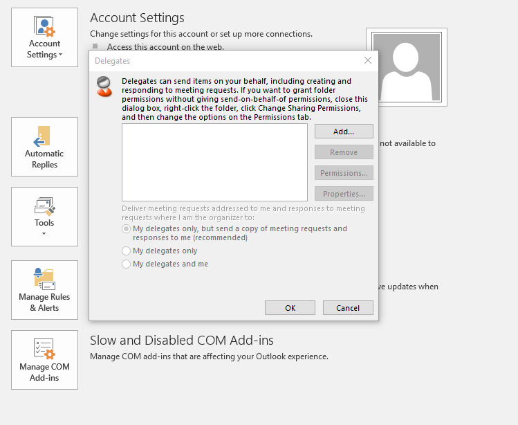
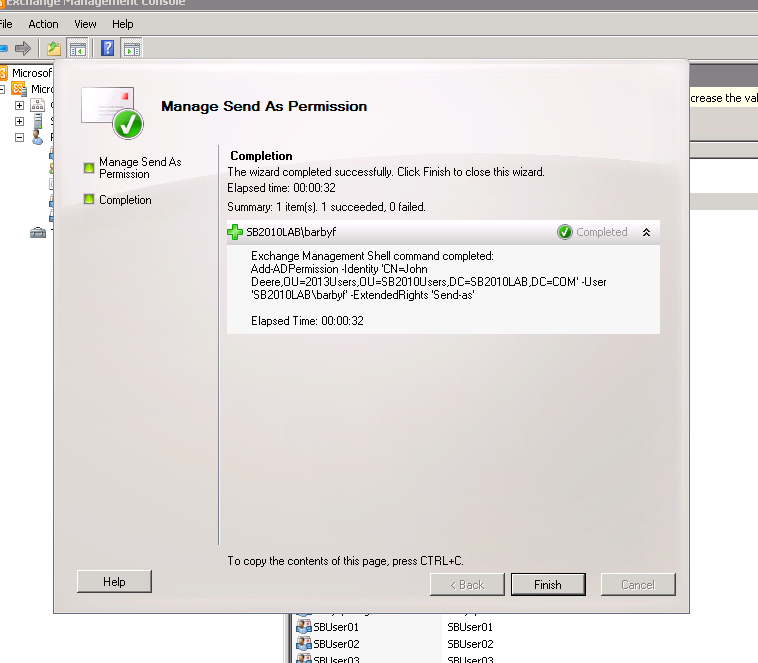
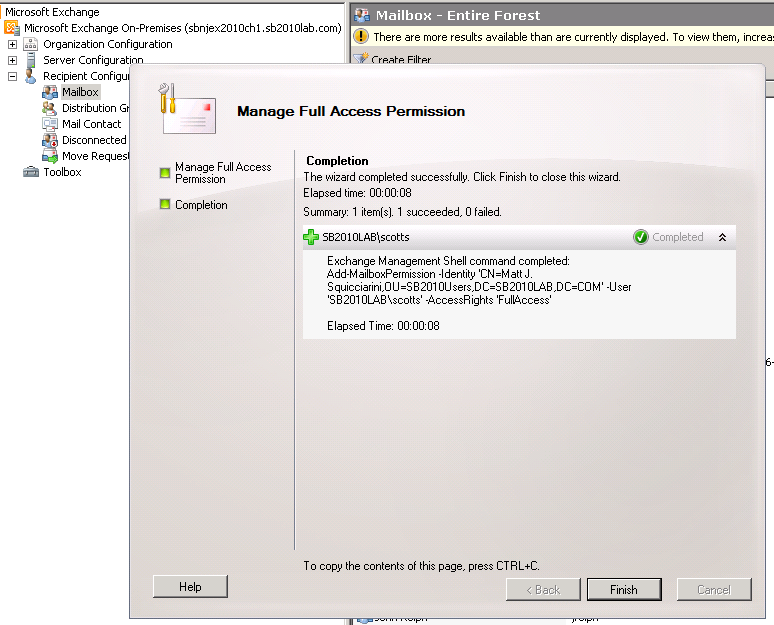
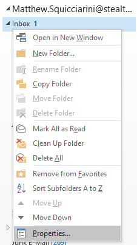
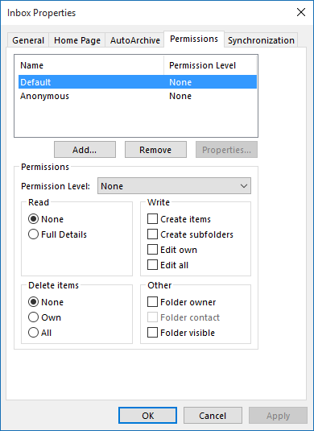

Summary: Explains Delegates, Send As, Full Mailbox Access, Mailbox Rights, Mailbox Permissions
Issue: There are several ways to give users permission to do things with other folk's mailboxes.
Some of these are set on the mailbox itself, while some are stored in active directory.
Active Directory Based Security Features
Delegates
Delegates are set in outlook.
They receive send on behalf of permissions by default.
Logon functionality depends on how mailbox permissions are set.

SendAs ( / Full Control)
1) Provides the ability to send as that user.
2) Provides full control over the mailbox.
3) Provides full control over the Active Directory object.

Exchange Mailbox Based Security Features
Full Mailbox Access (Mailbox Rights)
Mailbox Rights are provisioned at the mailbox level.
Full Mailbox Access means a provisioned user can log in to a given mailbox, but still cannot send mail as that user.

Mailbox Permissions (Folders within the Mailbox)
Mailbox Permissions are are set on the properties of individual folders within the mailbox in outlook:

Instructions: This is how those items are collected in StealthAUDIT:
(Obviously, not finished yet.)
Active Directory Based Security Features
Delegates
SendAs ( / Full Control)
Exchange Mailbox Based Security Features
Full Mailbox Access (Mailbox Rights)
Mailbox Permissions (Folders within the Mailbox)
Product: StealthAUDIT
Module: SA - DC - Exchange2k;SA - DC - ExchangeMailbox;SA - DC - ExchangePS;SA - Solution Set - Exchange
Legacy Article ID: 1460